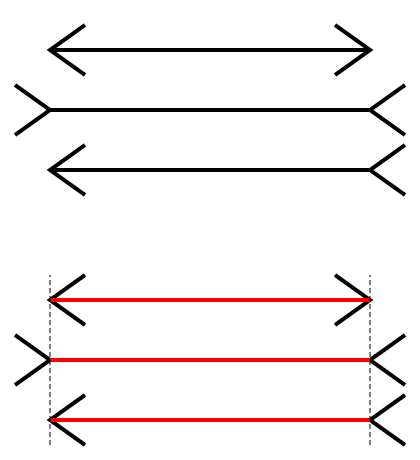
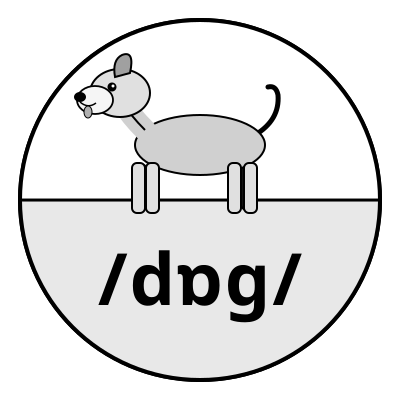

Introduction to the science of language
Morphology
Previously
Transmitting and recording language
- phonetics
- phonology
- writing
- language technology
Today
- knowledge of grammar
- words and their composition
- morphology
- student presentations
Knowledge of grammar
Grammar as science
Scientific method
- Science seeks to understand how the world works.
- To attain understanding means to discover basic laws and principles.
- Scientific laws and principles are subject to experimental testing.
What does any of this have to do with language?
- What does it mean to understand grammar?
- What laws and principles of grammar might there be?
- How can those laws and principles of grammar be tested experimentally?
Why study grammar?
Grammar is a bridge between sound and meaning
- semantics — grammar (morphology + syntax) — phonetics and phonology
Natural-language objects are hierarchical structures
- syllables (onset, nucleus, coda)
- words
- phrases
- sentences
What does grammar study?
Informally defined, grammar studies combinatorial rules.
- Key fact: native speakers/signers perceive certain strings as acceptable and other strings as unacceptable.
Examples
- denationalisation: acceptable
- nationalisationde: unacceptable
NB: we’ll be using the symbol ‘*’ in front of an expression to mean ‘meh’ from now on
- *nationalisationde
- as well as the other 118 remaining combinations of de-, nation, -al, -ise- and -ation
Is grammar necessary?
Q: Why bother studying the rules of grammar? Any native speaker knows them anyway!
A: Speakers know them tacitly and implicitly but cannot formulate them explicitly. A more accurate description would be that speaker possesses the rules of grammar, just as they possess the visual system (Ludlow 2011), in contrast to the rules of chess, artificial languages etc.
Q: But do we need some special language rules? Perhaps people just memorise the strings they encounter.
A: The number of acceptable expressions is potentially infinite, far greater than can be memorised. Besides, people can judge expressions (words, phrases and sentences) as acceptable or unacceptable that they have never encountered before.
Q: Speakers judge denationalisation as acceptable because they understand its meaning.
A: Speakers can judge semantically odd strings as acceptable and vice versa.
- ’Twas brillig and the slithey toves did gyre and gimble in the wabe.
- *Me not understanding you.
- Colourless green ideas sleep furiously.
- *The child seems sleeping.
Q: What if a speaker errs in their judgement? After all, there are such things as grammaticality illusions. * More people have been to Russia than I have.
A: Other cognitive systems, e.g. the visual system, may err but this doesn’t mean people should stop studying them.

We’ll start our exploration of the grammatical rules and regularities by considering what words are.
Morphology
Definitions
Morphology is the study of words and their internal constitution.
But what’s a word? No precise definition!
What is a word?
But we can identify a cluster of properties:
- discreteness
- e.g., words are separated by spaces or other conventions in other writing systems
- one main stress per word
- single idea/concept
- autonomy
Lots of fuzzy, grey area here, though.
The grey area: discreteness
Bertram’s father-in-law’s just made him a cuppa tea
- is father-in-law’s one word, or are there more?
- is cuppa one word or are these actually two words (cup and of)?
- what about Bertram’s?
Morphemes
More definitions:
- Words can be split up into smaller units.
- A morpheme is the smallest meaningful linguistic unit.
Can you think of counterexamples?
Meaningful units?
We can represent them as sound-meaning pairings:

How about -ify, or -er?
Words, lexemes, morphemes and features
Morpheme
- smallest meaning-carrying unit
Lexeme
- smallest free-standing meaning-carrying unit
- also free morpheme
Affix
- morpheme that is not free
- also bound morpheme
Word
- meaning-carrying unit
Roots and affixes
- in English, roots are free morphemes
- take denationalisation we have already examined: nation is its root, and it is a free morpheme that can be used in isolation
- not necessarily so in other languages
Examples
- door
- independently
Morpheme, lexeme or word?
- door = morpheme, lexeme and word
- not mutually exclusive
- independently = complex word
- depend- = lexeme (and a morpheme, obvs)
- in-, -ent, -ly = morphemes
What does a native speaker of a language need to know?
Sticking with denationalisation, the speaker needs to know
- each of the five morphemes: de-, nation, -al, -ise, -ation
- what kind of morpheme each of them is
- Is it free?
- If it is bound, is it a prefix, a suffix, or something else entirely?
- what the morpheme attaches to
- national + -ise
- *speak + -ise
- that this attachment relation is a local one
- what is the result of attaching a morpheme to another
To do that, more observation and generalisation is required.
Positional types of affixes: prefixes, suffixes
(and infixes, and circumfixes)
| Prefixes | Suffixes |
|---|---|
| asymmetric | treatable |
| inadequate | synthesise |
| proactive | leadership |
Frequently, more than one affix (prefix/suffix) can be added, just as in denationalisation
Tip: Think about it as a step-by-step process (1 affix per step).
Word classes
Word classes (aka ‘parts of speech’) are an attempt at finding regularities in natural-language expressions.
- traditional definitions familiar from school are unreliable and circular
- instead, formal and distributional criteria are called for
- such criteria are deductive in character
Word classes: school definitions
Let’s briefly consider two:
- Nouns denote objects.
- Verbs denote actions.
What’s wrong with these?
Formal criteria
involve unifying words into classes based on their form, i.e. how they look.
- verbs: -ed and its allomorphs
- nouns: singular vs. plural forms (glass – glasses; goose – geese)
- adjectives: forms of comparison (tall – taller – tallest)
Lexical and functional categories
in different parlance, open-class expressions vs. closed-class expressions (or notion words and function words)
Open-class expressions
Lexical categories possess a relatively obvious descriptive content
- nouns (category N) – desk, jacket, solitude, prowess
- adjectives (category A) – noticeable, yellow, spicy
- verbs (category V) – attend, run, rejoice
Closed-class expressions
Functional categories only carry grammatical meaning
- determiners/articles (category D) – the, each
- prepositions (category P) – above, in front of, under, behind
- complementisers (category C) – that, if, whether
Many affixes are category-specific
In one of two ways:
- they either place restrictions on the category (part of speech) of the thing with which they combine
- or turn one category into another
Inflectional and derivational morphology
- Derivational affixes make new words out of their host.
- very clear semantic/conceptual content
- Inflectional morphology creates a version of the same word.
- part of speech remains the same
- also true of some derivational morphology
- part of speech remains the same
Affixes as operations
Reduplication
- Indonesian gado ‘vegetable’ → gado-gado ‘vegetables’
Umlaut, ablaut, tone and stress change
- Umlaut: tooth–teeth, German Gott–Götter ‘god–gods’, Dutch pad–paden ‘path–paths’
- Ablaut: get–got, see–saw
- Stress change: REcord (noun) vs. reCORD ‘verb’
Compounds
Words formed by combining other words:
| compound | category | idiomatic? |
|---|---|---|
| babysit | V | yes |
| bartend | V | no |
| part supplier | N | no |
| anti-missile missile | N | no |
| kitchen towel rack | N | no |
| writer club address list | N | no |
What’s the pattern?
Right-Hand Head Rule (RHHR)
Simplifying for now, all English compounds look roughly like this:
See the pattern yet?
The rightmost element of a compound is the head of the compound.
Affixes are category- and subcategory-specific
Categories can have subcategories.
Back to denationalisation
de, nation, al, ise, ation
What order do we combine them in, and what goes with what?
Any further restrictions?
neighbourhood + -al \(\rightarrow\) *neighbourhoodal
honesty + -al \(\rightarrow\) *honestial
Affixes are (sub)category-specific
Let us consider a few examples of (sub)category-specificity
- -(i)an: library + -an \(\rightarrow\) librarian
- -age: orphan + -age \(\rightarrow\) orphanage
- -ism: manner + -ism \(\rightarrow\) mannerism
- -ate: origin + -ate \(\rightarrow\) originate
- -ise: symbol + -ise \(\rightarrow\) symbolise
- -ant: defy + -ant \(\rightarrow\) defiant
- -ive: restrict + -ive \(\rightarrow\) restrictive
Back to denationalisation
The nation, -al, -ise and -ation bits are pretty clear, giving us
Where does the de- fit in?
Denationalisation is when you denationalise something
- consequently, de- must attach to the verb in this instance
Structure determines meaning
What does unlockable mean?
- something that could not be locked;
- something that could be unlocked.
How does the same string give multiple meanings?
Similar to what we established for sentences in Week 1!
Summary
- to describe the structure of an object, we look for regularities
- applied to the structure of natural-language objects, this entails looking for grammatical regularities
- to establish the relationships between the parts of a whole, these parts must be found and categorised
- every natural-language speaker is capable of distinguishing between sequences of symbols/sounds that are a sentence in that language, and those that are not.
- applied to the structure of natural-language objects, this entails looking for grammatical regularities
In-class activities
Task 1: Segmentation into morphemes
Sometimes multiple answers are correct:
- saltpetre (monomorphemic) vs. salt+petre
- democrat (monomorphemic) vs. demo+crat
Task 3. Cebuano morphology
- if the stem begins with a vowel, prefix in-;
- inglis → in- + inglis
- if the stem begins with a consonant, infix -in- after that consonant
- sibwano → s- + -in- -ibwano
Assume all syllables have a C-onset:
- sibwano: CV
- ∅inglis: CV(C)
Infix -in- between onset and nucleus:
- s-ibwano: s- + -in- -ibwano
- ∅-inglis: ∅- + -in- -inglis
Morphological typology
Language around the globe
- around 7,000 languages
- languages > language groups > language families
- genealogical principle
\(\rightarrow\) explains some similarities between languages but not others
- genealogical principle
- organisation of grammatical building blocks
- typological principle
\(\rightarrow\) also explains some similarities between languages but not others
- typological principle

Genealogical principle at work
It can explain certain things by common origin.
- Usage of -t-/-d- for past tense
- German: machen ‘make’ — (ich) machte ‘I made’
- Dutch: maken ‘make’ — (ik) maakte ‘I made’
- …
- German heißen: ich heiße — du heißt — er heiß — wir heißen etc.
- Dutch heten: ik heet — jij heet — hij heet — wij heten etc.
- Norwegian hete: jeg/du/… heter
Genealogical principle at work
Usage of infinitive + present-tense form of have
- French: chanter ‘sing.inf’ + ai/as/a ‘I have/you have/he/she/it has’
- je chanterai/tu chanteras/il chantera’
- Spanish: cantar ‘sing.inf’ + *(h)é/(h)as/(h)a’
- (yo) cantaré/(tu) cantarás/(él) cantará
- Portuguese: cantar ‘sing.inf’ + *(h)ei/(h)ás/(h)á’
- (eu) cantarei/(tu) cantarás/(ele) cantará
| Personne | Forme | API |
|---|---|---|
| je | chante | /ʃɑ̃t/ |
| tu | chantes | /ʃɑ̃t/ |
| il/elle/on | chante | /ʃɑ̃t/ |
| Personne | Forme | API |
|---|---|---|
| nous | chantons | /ʃɑ̃.tɔ̃/ |
| vous | chantez | /ʃɑ̃.te/ |
| ils/elles | chantent | /ʃɑ̃t/ |
Limits of morphological variation
Two main parameters
- degree of allomorphy and fusion
- how clearly morphological information can be segmented
- degree of synthesis
- how many morphemes a run-of-the-mill word has